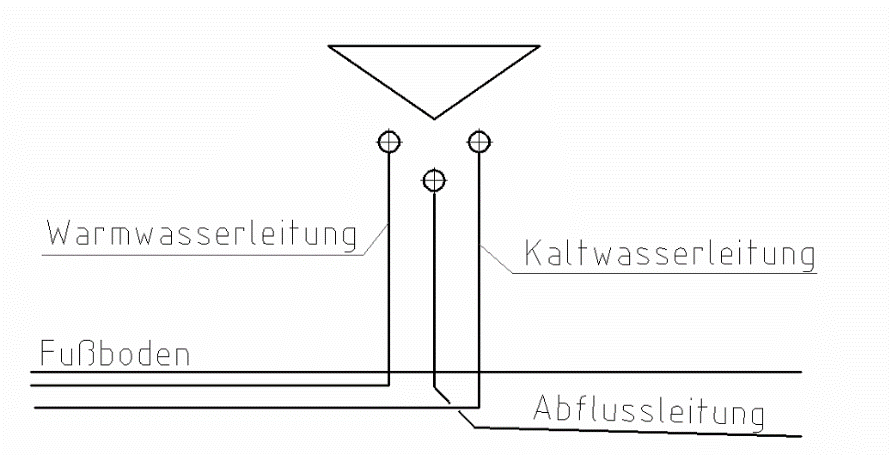
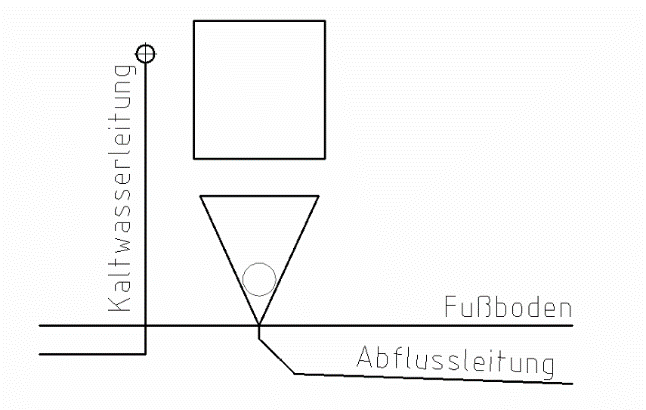
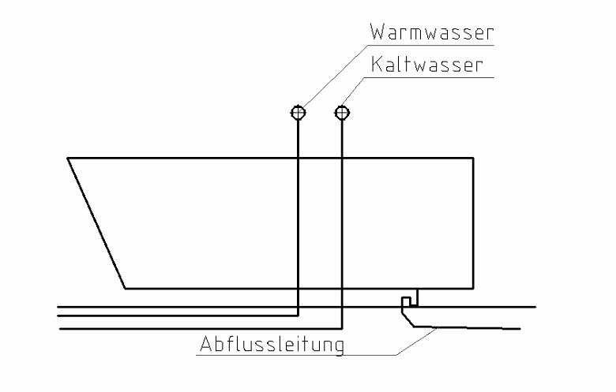
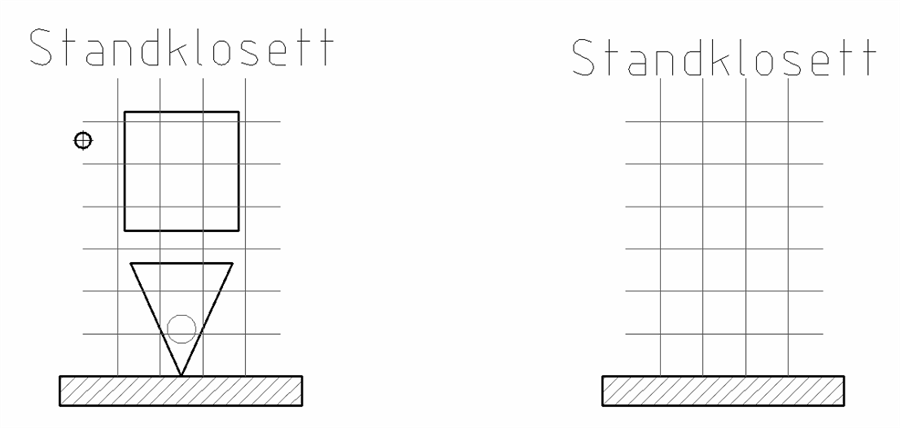
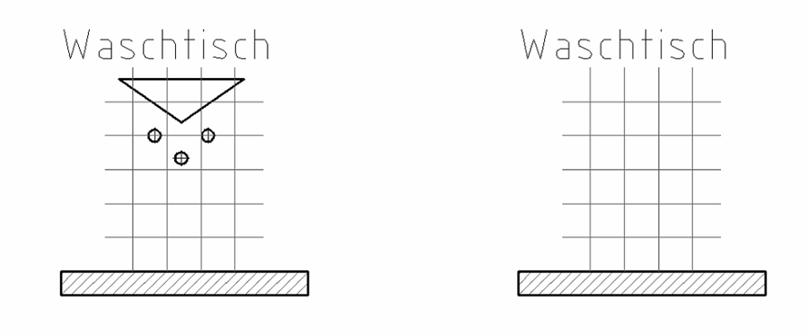
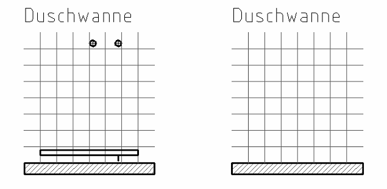

1 Sanitärgegenstände zeichnen
Öffnet YouTube. Braucht Internet.
Sanitärgegenstände sind z. B. Waschtisch, Klosett, Badewanne und Dusche.
In Plänen zeichnest du sie vereinfacht: nur mit einfachen Formen, ohne Details.
Die Anschlüsse zeichnest du auch ein: Warmwasser, Kaltwasser und Abfluss.
Abfluss = die Abwasserleitung. Dort fließt das verbrauchte Wasser weg.
Alle Zeichnungen zeigen den Gegenstand von vorne, so wie er an der Wand steht. Die lange Linie unten ist der Fußboden.
Das Zeichen für den Wasseranschluss
Ein kleiner Kreis mit Kreuz ist ein Anschluss für Warmwasser oder Kaltwasser.
Dort sitzt das Eckventil. Das ist ein kleines Absperrventil unter dem Waschtisch oder beim Klosett.
Waschtisch

- Warmwasser: links
- Kaltwasser: rechts
- Abfluss: in der Mitte, etwas tiefer
Der Waschtisch hat also 3 Leitungen.
Standklosett

- Das Viereck ist der Spülkasten.
- Das Dreieck ist die Klosettschüssel.
- Kaltwasser: links zum Spülkasten
- Abfluss: unten
Das Klosett hat nur 2 Leitungen: Kaltwasser und Abfluss.
Zum Spülen braucht man kein Warmwasser.
Badewanne

- Warmwasser und Kaltwasser: über der Wanne an der Wand (dort kommt die Armatur hin)
- Abfluss: unter der Wanne, am rechten Ende
Die Badewanne hat 3 Leitungen.
Zeichenaufgabe 1
✎ Am Papier
Du brauchst: kariertes Papier, Bleistift, Lineal.

1. Zeichne zuerst das Raster ab: 1 Kästchen im Bild = 2 Kästchen im Heft.
2. Zeichne das Standklosett ab. Zähl dabei die Kästchen.
3. Vergiss den Anschluss für das Kaltwasser nicht.
Zeichenaufgabe 2
✎ Am Papier

Mach es genauso wie bei Zeichenaufgabe 1.
- Raster abzeichnen
- Waschtisch abzeichnen
- Die 3 Anschlüsse einzeichnen
Zeichenaufgabe 3
✎ Am Papier

Die Duschwanne ist flach. Sie hat auch Warmwasser, Kaltwasser und einen Abfluss.
1. Zeichne das Raster ab.
2. Zeichne die Duschwanne ab, dazu die 2 Anschlüsse (Warmwasser, Kaltwasser) und den Abfluss.
3. Schreib den Namen über jede Zeichnung (wie in der Vorlage).